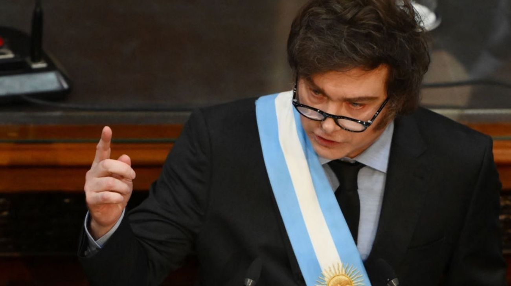

Milei abrió el año legislativo con una promesa ambiciosa: 90 reformas estructurales
Con un discurso cargado de números, críticas al kirchnerismo y una hoja de ruta de cambios profundos en materia tributaria, judicial, electoral y comercial, el mandatario marcó la agenda política y económica para los próximos meses.

Con el Congreso como escenario, Javier Milei abrió este domingo las sesiones ordinarias 2026 con un discurso que no dejó lugar a dudas sobre sus intenciones para el año que comienza. El presidente anunció que su gobierno presentará 90 paquetes de reformas estructurales a lo largo de nueve meses, a razón de diez por ministerio, una por mes. La apuesta es ambiciosa y abarca prácticamente todos los pilares del Estado: desde el sistema impositivo hasta la Justicia, pasando por el Código Penal, el Código Civil y Comercial, el sistema electoral y la política aduanera. En sus propias palabras: "Es la hora de la visión, es la hora de pensar como nación y no solo como gobierno".
Entre las reformas que generaron mayor atención se destacan la tributaria —con una prometida baja de impuestos— y la electoral, que incluiría cambios en el financiamiento de los partidos políticos y la posible eliminación de las PASO. También se anunciaron una mayor apertura comercial, más privatizaciones y desregulaciones, y una reducción de las retenciones al campo, aunque esta última medida quedó condicionada al mantenimiento del superávit fiscal, uno de los logros que el Gobierno más reivindica. Para contextualizar: las retenciones son impuestos que paga el sector exportador —principalmente agropecuario— cuando vende sus productos al exterior, y su baja es una demanda histórica del campo argentino.
Milei también repasó los números de su primer año de gestión con tono triunfal. Destacó la eliminación del déficit fiscal sin subir impuestos, más de 14.500 desregulaciones, una reducción del 20% de la planta estatal y del 40% de los cargos jerárquicos —con un ahorro anual estimado de US$2.000 millones—, la normalización del mercado de alquileres (donde los precios reales habrían bajado un 30%), y la aprobación del RIGI, un régimen de incentivos para grandes inversiones que ya tiene proyectos por US$25.000 millones en marcha. En política exterior, ratificó su alineamiento con Estados Unidos dentro de lo que definió como "el nuevo orden mundial" y puso el foco en los recursos naturales del país: minería, energía y minerales críticos, destacando además la posición estratégica de Argentina en el Atlántico Sur.
El discurso también tuvo sus momentos de tensión política. Milei apuntó con dureza contra el kirchnerismo, pero también contra ciertos empresarios industriales a quienes acusó de ser "cómplices del saqueo" y de resistir los cambios que propone su gobierno. La frase con la que abrió su balance fue contundente: "Hace tan solo 2 años la Argentina estaba en una situación de crisis terminal". Con ese punto de partida, el presidente buscó contrastar el pasado con el presente y proyectar un futuro de reformas que, si se concretan, cambiarían de manera profunda el funcionamiento del Estado, la economía y la política argentina. El Congreso, donde el oficialismo no tiene mayoría propia, será el principal campo de batalla para ver cuántas de esas 90 reformas logran convertirse en realidad.